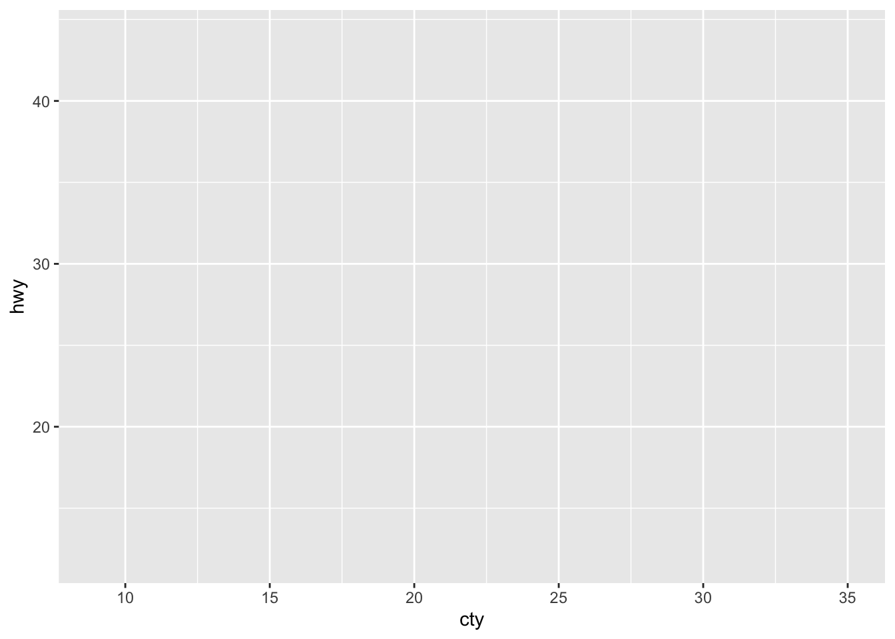
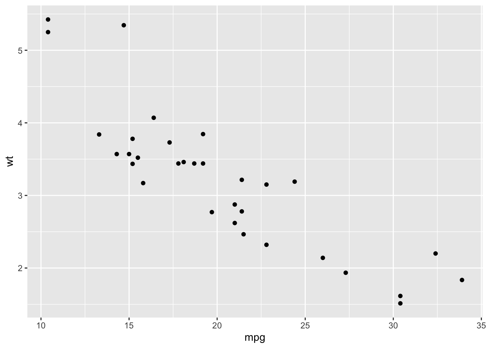
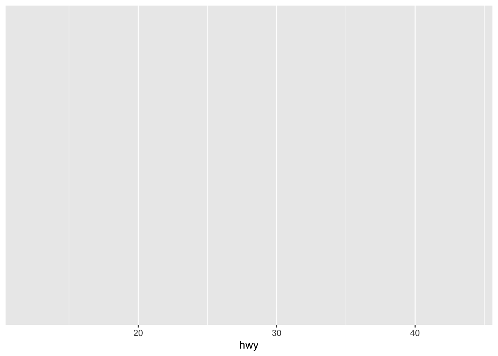
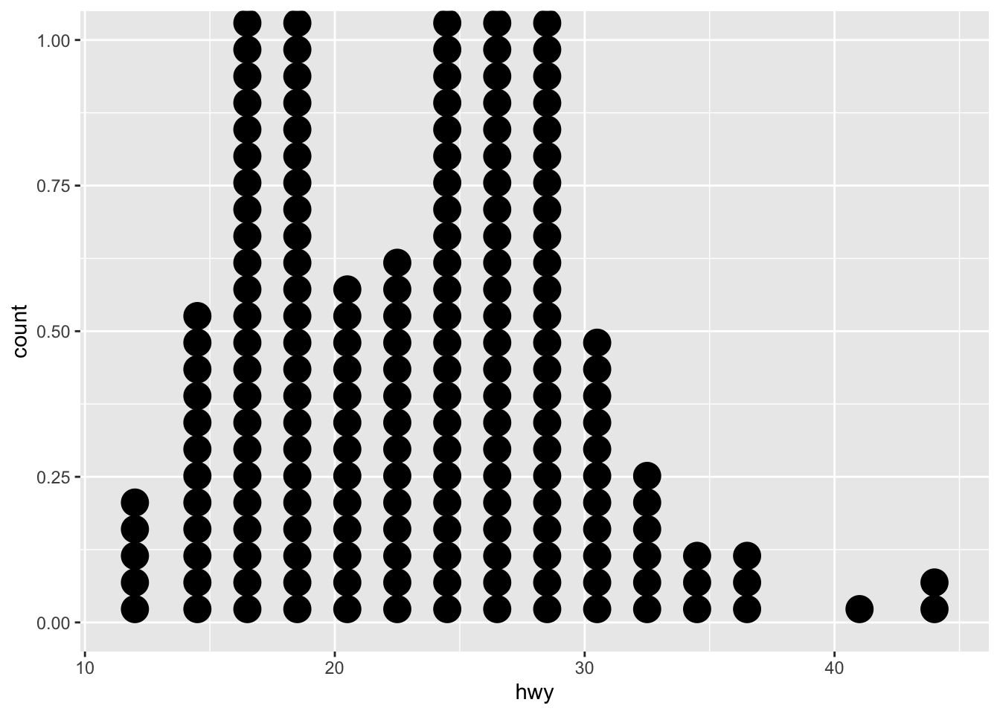
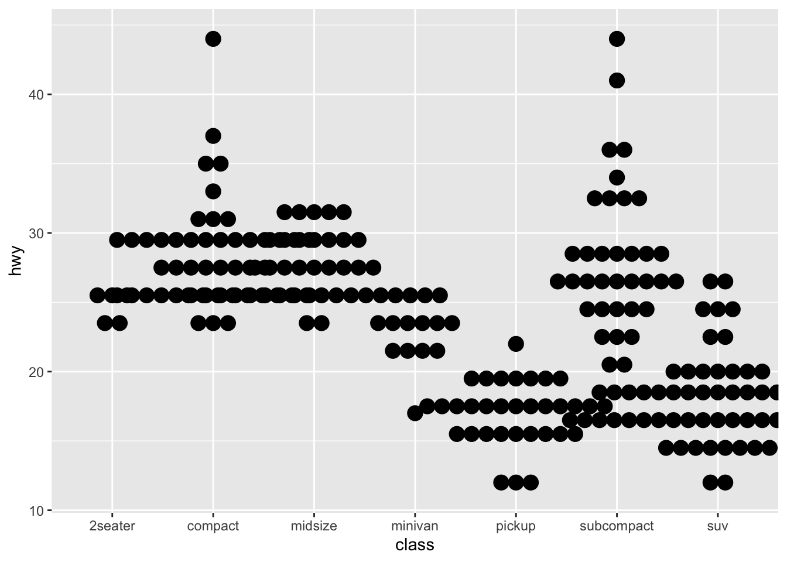

library(tidyverse)
library(skimr)
library(gridExtra)Data visualization with ggplot2
The ultimate cheatsheet compilation
Overview

Run
?ggplot2for author information. ggplot2 is a system for ‘declaratively’ creating graphics, based on “The Grammar of Graphics”. You provide the data, tell ‘ggplot2’ how to map variables to aesthetics, what graphical primitives to use, and it takes care of the details.For package documentation, run
help(package = "ggplot2")Need help getting started? Try the R Graphics Cookbook
Run
??ggplot2for broader searchFor an html helper page on your browser, run
help.start()
browseVignettes("ggplot2")Datasets
mpg
Fuel economy data from 1999 to 2008 for 38 popular models of cars. A data frame with 234 rows and 11 variables:
mpg vars. |
Description |
|---|---|
| manufacturer | Manufacturer name |
| model | Model name |
| displ | Engine displacement (liters) |
| year | Year of manufacture |
| cyl | Number of cylinders |
| trans | Type of transmission |
| drv | Drive train (f = front, r = rear, 4 = 4WD) |
| cty | City miles per gallon |
| hwy | Highway miles per gallon |
| fl | Fuel type |
| class | Type of car |
glimpse(mpg)Rows: 234
Columns: 11
$ manufacturer <chr> "audi", "audi", "audi", "audi", "audi", "audi", "audi", "…
$ model <chr> "a4", "a4", "a4", "a4", "a4", "a4", "a4", "a4 quattro", "…
$ displ <dbl> 1.8, 1.8, 2.0, 2.0, 2.8, 2.8, 3.1, 1.8, 1.8, 2.0, 2.0, 2.…
$ year <int> 1999, 1999, 2008, 2008, 1999, 1999, 2008, 1999, 1999, 200…
$ cyl <int> 4, 4, 4, 4, 6, 6, 6, 4, 4, 4, 4, 6, 6, 6, 6, 6, 6, 8, 8, …
$ trans <chr> "auto(l5)", "manual(m5)", "manual(m6)", "auto(av)", "auto…
$ drv <chr> "f", "f", "f", "f", "f", "f", "f", "4", "4", "4", "4", "4…
$ cty <int> 18, 21, 20, 21, 16, 18, 18, 18, 16, 20, 19, 15, 17, 17, 1…
$ hwy <int> 29, 29, 31, 30, 26, 26, 27, 26, 25, 28, 27, 25, 25, 25, 2…
$ fl <chr> "p", "p", "p", "p", "p", "p", "p", "p", "p", "p", "p", "p…
$ class <chr> "compact", "compact", "compact", "compact", "compact", "c…skimr::skim(mpg)| Name | mpg |
| Number of rows | 234 |
| Number of columns | 11 |
| _______________________ | |
| Column type frequency: | |
| character | 6 |
| numeric | 5 |
| ________________________ | |
| Group variables | None |
Variable type: character
| skim_variable | n_missing | complete_rate | min | max | empty | n_unique | whitespace |
|---|---|---|---|---|---|---|---|
| manufacturer | 0 | 1 | 4 | 10 | 0 | 15 | 0 |
| model | 0 | 1 | 2 | 22 | 0 | 38 | 0 |
| trans | 0 | 1 | 8 | 10 | 0 | 10 | 0 |
| drv | 0 | 1 | 1 | 1 | 0 | 3 | 0 |
| fl | 0 | 1 | 1 | 1 | 0 | 5 | 0 |
| class | 0 | 1 | 3 | 10 | 0 | 7 | 0 |
Variable type: numeric
| skim_variable | n_missing | complete_rate | mean | sd | p0 | p25 | p50 | p75 | p100 | hist |
|---|---|---|---|---|---|---|---|---|---|---|
| displ | 0 | 1 | 3.47 | 1.29 | 1.6 | 2.4 | 3.3 | 4.6 | 7 | ▇▆▆▃▁ |
| year | 0 | 1 | 2003.50 | 4.51 | 1999.0 | 1999.0 | 2003.5 | 2008.0 | 2008 | ▇▁▁▁▇ |
| cyl | 0 | 1 | 5.89 | 1.61 | 4.0 | 4.0 | 6.0 | 8.0 | 8 | ▇▁▇▁▇ |
| cty | 0 | 1 | 16.86 | 4.26 | 9.0 | 14.0 | 17.0 | 19.0 | 35 | ▆▇▃▁▁ |
| hwy | 0 | 1 | 23.44 | 5.95 | 12.0 | 18.0 | 24.0 | 27.0 | 44 | ▅▅▇▁▁ |
economics & economics_long
US economic time series: economics is in wide format and & economics_long in long format. A data frame with 574 rows and 6 variables.
| vars. | Description |
|---|---|
| date | Month of data collection |
| pce | Personal consumption expenditures (in billions of $) |
| pop | Total population (in thousands) |
| psavert | Personal savings rate |
| uempmed | Median duration of unemployment (in weeks) |
| unemploy | Number of unemployed (in thousands) |
glimpse(economics)Rows: 574
Columns: 6
$ date <date> 1967-07-01, 1967-08-01, 1967-09-01, 1967-10-01, 1967-11-01, …
$ pce <dbl> 506.7, 509.8, 515.6, 512.2, 517.4, 525.1, 530.9, 533.6, 544.3…
$ pop <dbl> 198712, 198911, 199113, 199311, 199498, 199657, 199808, 19992…
$ psavert <dbl> 12.6, 12.6, 11.9, 12.9, 12.8, 11.8, 11.7, 12.3, 11.7, 12.3, 1…
$ uempmed <dbl> 4.5, 4.7, 4.6, 4.9, 4.7, 4.8, 5.1, 4.5, 4.1, 4.6, 4.4, 4.4, 4…
$ unemploy <dbl> 2944, 2945, 2958, 3143, 3066, 3018, 2878, 3001, 2877, 2709, 2…skimr::skim(economics)| Name | economics |
| Number of rows | 574 |
| Number of columns | 6 |
| _______________________ | |
| Column type frequency: | |
| Date | 1 |
| numeric | 5 |
| ________________________ | |
| Group variables | None |
Variable type: Date
| skim_variable | n_missing | complete_rate | min | max | median | n_unique |
|---|---|---|---|---|---|---|
| date | 0 | 1 | 1967-07-01 | 2015-04-01 | 1991-05-16 | 574 |
Variable type: numeric
| skim_variable | n_missing | complete_rate | mean | sd | p0 | p25 | p50 | p75 | p100 | hist |
|---|---|---|---|---|---|---|---|---|---|---|
| pce | 0 | 1 | 4820.09 | 3556.80 | 506.7 | 1578.3 | 3936.85 | 7626.33 | 12193.8 | ▇▅▃▂▃ |
| pop | 0 | 1 | 257159.65 | 36682.40 | 198712.0 | 224896.0 | 253060.00 | 290290.75 | 320402.3 | ▇▇▆▆▇ |
| psavert | 0 | 1 | 8.57 | 2.96 | 2.2 | 6.4 | 8.40 | 11.10 | 17.3 | ▃▇▆▅▁ |
| uempmed | 0 | 1 | 8.61 | 4.11 | 4.0 | 6.0 | 7.50 | 9.10 | 25.2 | ▇▃▁▁▁ |
| unemploy | 0 | 1 | 7771.31 | 2641.96 | 2685.0 | 6284.0 | 7494.00 | 8685.50 | 15352.0 | ▃▇▆▂▁ |
seals
Vector field data of seal movements. A data frame with 1155 rows and 4 variables. This dataset is likely used for visualizing seal movement patterns over time, possibly using vector field plots. The delta_long and delta_lat columns indicate how far a seal has moved from one observation to the next.
| vars. | Description |
|---|---|
| lat | (latitude): The geographical latitude where the seal was recorded |
| long | (longitude): The geographical longitude where the seal was recorded |
| delta_long | Change in longitude between consecutive observations, representing movement |
| delta_lat | Change in latitude between consecutive observations, representing movement |
glimpse(seals)skimr::skim(seals)mtcars
Motor Trend Car Road Tests
Fuel consumption and 10 aspects of automobile design and performance for 32 automobiles (1973–74 models). A data frame with 32 observations on 11 (numeric) variables.
| col | vars. | Description |
|---|---|---|
| [, 1] | mpg | Miles/(US) gallon |
| [, 2] | cyl | Number of cylinders |
| [, 3] | disp | Displacement (cu.in.) |
| [, 4] | hp | Gross horsepower |
| [, 5] | drat | Drive ratio (or rear axle ratio) * |
| [, 6] | wt | Weight (1000 lbs) |
| [, 7] | qsec | time in sec to complete a quarter mile |
| [, 8] | vs | Engine (0 = V-shaped, 1 = straight) |
| [, 9] | am | Transmission (0 = automatic, 1 = manual) |
| [,10] | gear | Number of forward gears |
| [,11] | carb | Number of carburetors |
* Drive ratio refers to the ratio of the number of rotations of the driveshaft to one full rotation of the rear wheels. A higher drat means the engine needs more rotations to turn the wheels once, which can provide better acceleration but may reduce fuel efficiency.
glimpse(mtcars)Rows: 32
Columns: 11
$ mpg <dbl> 21.0, 21.0, 22.8, 21.4, 18.7, 18.1, 14.3, 24.4, 22.8, 19.2, 17.8,…
$ cyl <dbl> 6, 6, 4, 6, 8, 6, 8, 4, 4, 6, 6, 8, 8, 8, 8, 8, 8, 4, 4, 4, 4, 8,…
$ disp <dbl> 160.0, 160.0, 108.0, 258.0, 360.0, 225.0, 360.0, 146.7, 140.8, 16…
$ hp <dbl> 110, 110, 93, 110, 175, 105, 245, 62, 95, 123, 123, 180, 180, 180…
$ drat <dbl> 3.90, 3.90, 3.85, 3.08, 3.15, 2.76, 3.21, 3.69, 3.92, 3.92, 3.92,…
$ wt <dbl> 2.620, 2.875, 2.320, 3.215, 3.440, 3.460, 3.570, 3.190, 3.150, 3.…
$ qsec <dbl> 16.46, 17.02, 18.61, 19.44, 17.02, 20.22, 15.84, 20.00, 22.90, 18…
$ vs <dbl> 0, 0, 1, 1, 0, 1, 0, 1, 1, 1, 1, 0, 0, 0, 0, 0, 0, 1, 1, 1, 1, 0,…
$ am <dbl> 1, 1, 1, 0, 0, 0, 0, 0, 0, 0, 0, 0, 0, 0, 0, 0, 0, 1, 1, 1, 0, 0,…
$ gear <dbl> 4, 4, 4, 3, 3, 3, 3, 4, 4, 4, 4, 3, 3, 3, 3, 3, 3, 4, 4, 4, 3, 3,…
$ carb <dbl> 4, 4, 1, 1, 2, 1, 4, 2, 2, 4, 4, 3, 3, 3, 4, 4, 4, 1, 2, 1, 1, 2,…skimr::skim(mtcars)| Name | mtcars |
| Number of rows | 32 |
| Number of columns | 11 |
| _______________________ | |
| Column type frequency: | |
| numeric | 11 |
| ________________________ | |
| Group variables | None |
Variable type: numeric
| skim_variable | n_missing | complete_rate | mean | sd | p0 | p25 | p50 | p75 | p100 | hist |
|---|---|---|---|---|---|---|---|---|---|---|
| mpg | 0 | 1 | 20.09 | 6.03 | 10.40 | 15.43 | 19.20 | 22.80 | 33.90 | ▃▇▅▁▂ |
| cyl | 0 | 1 | 6.19 | 1.79 | 4.00 | 4.00 | 6.00 | 8.00 | 8.00 | ▆▁▃▁▇ |
| disp | 0 | 1 | 230.72 | 123.94 | 71.10 | 120.83 | 196.30 | 326.00 | 472.00 | ▇▃▃▃▂ |
| hp | 0 | 1 | 146.69 | 68.56 | 52.00 | 96.50 | 123.00 | 180.00 | 335.00 | ▇▇▆▃▁ |
| drat | 0 | 1 | 3.60 | 0.53 | 2.76 | 3.08 | 3.70 | 3.92 | 4.93 | ▇▃▇▅▁ |
| wt | 0 | 1 | 3.22 | 0.98 | 1.51 | 2.58 | 3.33 | 3.61 | 5.42 | ▃▃▇▁▂ |
| qsec | 0 | 1 | 17.85 | 1.79 | 14.50 | 16.89 | 17.71 | 18.90 | 22.90 | ▃▇▇▂▁ |
| vs | 0 | 1 | 0.44 | 0.50 | 0.00 | 0.00 | 0.00 | 1.00 | 1.00 | ▇▁▁▁▆ |
| am | 0 | 1 | 0.41 | 0.50 | 0.00 | 0.00 | 0.00 | 1.00 | 1.00 | ▇▁▁▁▆ |
| gear | 0 | 1 | 3.69 | 0.74 | 3.00 | 3.00 | 4.00 | 4.00 | 5.00 | ▇▁▆▁▂ |
| carb | 0 | 1 | 2.81 | 1.62 | 1.00 | 2.00 | 2.00 | 4.00 | 8.00 | ▇▂▅▁▁ |
Basics
ggplot2 is based on the grammar of graphics, the idea that you can build every graph from the same components: (1) a data set, a (2) coordinate system, and (3) geoms — visual marks that represent data points.
last_plot() # Returns the last plot.NULLggsave("plot.png", width = 5, height = 5) # Saves last plot as 5' x 5' file named "plot.png" in working directory. Matches file type to file extension.To display values, map variables in the data to visual properties of the geom (aesthetics) like size, color, and x and y locations.
Complete the template below to build a graph.
ggplot(data = ) + #required: data <geom_…>(mapping = aes(
Data, a Geom Function, and Aes Mappings are required. Stat, Position, and the Coordinate, Facet, Scale, and Theme functions are not required and will supply sensible defaults.
ggplot(data = mpg, aes(x = cty, y = hwy)) # no geom_function
# Begins a plot that you finish by adding layers to.
# Add one geom function per layer.Common aes() values
color and fill
String ("red", "#RRGGBB").
linetype
library(ggplot2)
# Create a data frame with different line types, inverted order
linetypes_df <- data.frame(
x = rep(1, 7),
y = 6:0, # Ensures values from 6 to 0
linetype = factor(6:0, labels = c("twodash", "longdash", "dotdash",
"dotted", "dashed", "solid", "blank"))
)
# Create the plot
ggplot(linetypes_df, aes(x = x, y = y, linetype = linetype)) +
geom_segment(aes(x = 2, xend = 3, y = y, yend = y), size = 1.5) + # Draws the lines
scale_linetype_manual(values = 0:6) + # Assigns line types
scale_y_continuous(breaks = 6:0, labels = c("twodash (6)", "longdash (5)", "dotdash (4)",
"dotted (3)", "dashed (2)", "solid (1)", "blank (0)")) + # Ensures all 7 tick labels
labs(title = "ggplot2 linetypes",
x = NULL, y = NULL) +
theme_minimal() +
theme(
axis.line.x = element_blank(), # Removes x-axis line
axis.ticks.x = element_blank(), # Removes x-axis ticks
axis.text.x = element_blank(), # Removes x-axis labels
legend.position = "none"
) Warning: Using `size` aesthetic for lines was deprecated in ggplot2 3.4.0.
ℹ Please use `linewidth` instead.size
Integer (in mm for size of points and text).
linewidth
Integer (in mm for widths of lines).
shape
Integer/shape name or a single character ("a").
library(ggplot2)
# Create a data frame with different shape types
shapes_df <- data.frame(
x = rep(1, 26),
y = 0:25, # Reverse order to display top to bottom
shape = factor(0:25, labels = c(
"square open (0)", "circle open (1)", "triangle open (2)", "plus (3)",
"cross (4)", "diamond open (5)", "triangle down open (6)", "square cross (7)",
"asterisk (8)", "diamond plus (9)", "circle plus (10)", "star (11)",
"square plus (12)", "circle cross (13)", "square triangle (14)", "square (15)",
"circle (16)", "triangle (17)", "diamond (18)", "circle small (19)",
"bullet (20)", "circle filled (21)", "square filled (22)", "diamond filled (23)",
"triangle filled (24)", "triangle down filled (25)"
))) # Ensure exactly 25 labels
# Create the plot
ggplot(data = shapes_df) +
geom_point(mapping =
aes(
x = x,
y = y,
shape = shape),size = 2.2) +
scale_shape_manual(values = 0:25) + # Assigns shape values
scale_y_continuous(breaks = 25:0, labels = rev(levels(shapes_df$shape))) + # Ensures all tick labels
labs(title = "ggplot2 shapes", x = NULL, y = NULL) +
theme_minimal(base_line_size = 0.2) +
theme(
axis.line.x = element_blank(), # Removes x-axis line
axis.ticks.x = element_blank(), # Removes x-axis ticks
axis.text.x = element_blank()) # Removes x-axis labelsGeom primitives
- Use a geom function to represent data points;
- Use the geom’s aesthetic properties to represent variables;
- Each function returns a layer.
geom_blank()
The base code n_unemploy where examples will be built is based on the economics dataset.
Note that running n_unemploy displays the base coordinate system with the variables date in the x axis and unemploy in the y axis. However, no actual data is plotted, since no geom_ function was specified.
n_unemploy <- ggplot(data = economics, aes(x = date, y = unemploy))
# x = date <date> 1967-07-01,... Month of data collection
# y = unemploy <dbl> 2944,... Number of unemployed (in thousands)
n_unemploy # Note that running The blank geom draws nothing, but can be a useful way of ensuring common scales between different plots. See expand_limits() for more details.
Returns the same result as the base code n_unemploy
n_unemploy + geom_blank()# OR
ggplot(data = economics) +
geom_blank(aes(x = date, y = unemploy))
Connecting observations
geom_path() connects the observations in the order in which they appear in the data. geom_line() connects them in order of the variable on the x axis. geom_step() creates a stairstep plot, highlighting exactly when changes occur.
geom_polygon(): Polygons are very similar to paths (as drawn by geom_path()) except that the start and end points are connected and the inside is coloured by fill.
So use geom_path() for an unfilled polygon, geom_polygon() for a filled polygon and geom_ribbon() for a polygon anchored on the x-axis.
geom_path()
Before we look at geom_path, let’s just take a look at a standard scatter plot to get a sense of the data.
n_unemploy + geom_point()
# OR
ggplot(data = economics) +
geom_point(aes(x = date, y = unemploy))geom_path() connects the observations in the order in which they appear in the data. The group aesthetic determines which cases are connected together.
aes() arguments: x, y, alpha, color, group, linetype, size.
Usage:
geom_path(
mapping = NULL,
data = NULL,
stat = "identity",
position = "identity",
...,
lineend = "butt",
linejoin = "round",
linemitre = 10,
arrow = NULL,
na.rm = FALSE,
show.legend = NA,
inherit.aes = TRUE
)Arguments:
lineend: Line end style (“round”, “butt”, “square”).linejoin: Line join style (“round”, “mitre”, “bevel”).linemitre: Line mitre limit (number greater than 1). Obs. miter/mitre: (joint) chanfro de 45 graus
n_unemploy + geom_path(lineend = "butt", linejoin = "mitre", linemitre = 1)# OR
ggplot(data = economics) +
geom_path(aes(x = date, y = unemploy)) # in this case no arguments are specified.
Other functions used to connect observations are:
geom_line()connects them in order of the variable on the x axisgeom_step()creates a stairstep plot, highlighting exactly when changes occur.
geom_polygon()
Polygons are very similar to paths (as drawn by geom_path()) except that the start and end points are connected and the inside is coloured by fill. The group aesthetic determines which cases are connected together into a polygon.
It is possible to draw polygons with holes by providing a subgroup aesthetic that differentiates the outer ring points from those describing holes in the polygon.
aes() arguments: x, y, alpha, color, fill, group, subgroup, linetype, size.
- relevant:
fill,subgroup
geom_polygon(
mapping = NULL,
data = NULL,
stat = "identity",
position = "identity",
rule = "evenodd",
...,
na.rm = FALSE,
show.legend = NA,
inherit.aes = TRUE
)n_unemploy + geom_polygon()
# OR
ggplot(data = economics) +
geom_polygon(aes(x = date, y = unemploy))geom_ribbon() & geom_area()
For each x value, geom_ribbon() displays a y interval defined by ymin and ymax.
aes() arguments: x, ymin, ymax, alpha, color, fill, group, linetype, size.
- relevant:
ymin,ymax,outline.type
geom_area() is a special case of geom_ribbon(), where the ymin is fixed to 0 and y is used instead of ymax.
n_unemploy + geom_ribbon(aes(ymin = unemploy - 900, ymax = unemploy + 900))
# OR
ggplot(data = economics) +
geom_ribbon(aes(x = date, y = unemploy,
ymin = unemploy - 900, ymax = unemploy + 900))expand_limits()
Expands the plot limits using data. Sometimes you may want to ensure limits include a single value, for all panels or all plots. This function is a thin wrapper around geom_blank() that makes it easy to add such values.
mpg_wt <- ggplot(data = mtcars, # 11 numerical variables for 32 automobiles
aes(x = mpg, y = wt)) + geom_point()
mpg_wt
mpg_wt + expand_limits(x = 0) 
# OR
ggplot(data = mtcars) +
geom_point(aes(x = mpg, y = wt)) +
expand_limits(x = 0)mpg_wt + expand_limits(y = c(1, 9)) # OR
ggplot(data = mtcars) +
geom_point(aes(x = mpg, y = wt)) +
expand_limits(y = c(1, 9))
mpg_wt + expand_limits(x = 0, y = 0) 
# OR
ggplot(data = mtcars) +
geom_point(aes(x = mpg, y = wt)) +
expand_limits(x = 0, y = 0)mpg_wt + expand_limits(x = c(0,40), y = c(0,10))
# OR
ggplot(data = mtcars) +
geom_point(aes(x = mpg, y = wt)) +
expand_limits(x = c(0,40), y = c(0,10))SEAL DATASET
seal_lat <- ggplot(data = seals, aes(x = long, y = lat))
# x = long <dbl> Geographical longitude where the seal was recorded
# y = lat <dbl> Geographical latitude where the seal was recorded
seal_lat + geom_point()Line segments and curves
geom_segment() & geom_curve()
geom_segment() draws a straight line from (x, y) to (xend, yend).
geom_curve() draws a curved line from (x, y) to (xend, yend). See the underlying drawing function grid::curveGrob() for the parameters that control the curve. aes() arguments: x, xend, y, yend, alpha, angle, color, curvature, linetype, size.
seal_lat + geom_segment(aes(yend = lat + 1, xend = long + 1)) # Draw a straight line from `(x, y)` to `(xend, yend)`.seal_lat + geom_curve(aes(yend = lat + 1, xend = long + 1), curvature = 1)ggplot() +
geom_curve(aes(x = 2.62, xend = 3.57, y = 21.0, yend = 15.0, colour = "curve")) +
geom_segment(aes(x = 2.62, xend = 3.57, y = 21.0, yend = 15.0, colour = "segment"))wt_mpg <- ggplot(mtcars, aes(wt, mpg)) +
geom_point()
os_curve <- data.frame(x1 = 2.62, x2 = 3.57, y1 = 21.0, y2 = 15.0)
wt_mpg +
geom_curve(aes(x = x1, y = y1, xend = x2, yend = y2, colour = "curve"), data = os_curve, arrow = arrow(length = unit(0.05, "npc"))) +
geom_segment(aes(x = x1, y = y1, xend = x2, yend = y2, colour = "segment"), data = os_curve)geom_spoke()
geom_spoke() is a polar parameterisation of geom_segment(). It is useful when you have variables that describe direction and distance. The angles start from east and increase counterclockwise.
Draw line segments using polar coordinates (angle and radius).
seal_lat + geom_spoke(aes(angle = 1:1155, radius = 1)) # Draw line segments using polar coordinates (`angle` and `radius`).
geom_rect()
- `
: Draw a rectangle by connecting four corners (xmin,xmax,ymin,ymax).aes()arguments:xmax,xmin,ymax,ymin,alpha,color,fill,linetype,size`.
seal_lat + geom_rect(aes(xmin = long, ymin = lat, xmax = long + 1, ymax = lat + 1))Reference lines: horizontal, vertical, and diagonal
These geoms add reference lines (sometimes called rules) to a plot, either horizontal, vertical, or diagonal (specified by slope and intercept). These are useful for annotating plots.
Common aesthetics: x, y, alpha, color, linetype, size, linewidth.
geom_abline()
Draw a diagonal reference line with a given slope and intercept.
ggplot() + geom_abline(aes(intercept = 0, slope = 1)) # Draw a diagonal reference line with a given `slope` and `intercept`.geom_hline()
Draw a horizontal reference line with a given yintercept.
seal_lat + geom_hline(aes(yintercept = lat)) # Draw a horizontal reference line with a given `yintercept`.geom_vline()
Draw a vertical reference line with a given xintercept.
seal_lat + geom_vline(aes(xintercept = long)) # Draw a vertical reference line with a given `xintercept`.One Variable
Continuous
hwy <- ggplot(
data = mpg, # Fuel economy data from 1999 to 2008 for 38 popular models of cars.
aes(hwy)) # Highway miles per gallon
hwy
geom_area()
Draw an area plot.
aes() arguments: x, y, alpha, color, fill, linetype, linewidth.
ggplot(data = mpg, aes(hwy)) + geom_area(stat = "bin")`stat_bin()` using `bins = 30`. Pick better value with `binwidth`.geom_density()
?geom_density() Computes and draws kernel density estimate, which is a smoothed version of the histogram. This is a useful alternative to the histogram for continuous data that comes from an underlying smooth distribution.
The term kernel refers to the smoothing function used in Kernel Density Estimation (KDE). KDE is a method for estimating the probability density function (PDF) of a continuous random variable. It provides a smooth estimate of the distribution of the data, as opposed to a histogram, which is more discrete. The kernel function determines the shape of the weighting function applied to each data point.
See ?density for a list of available kernels: “gaussian”, “epanechnikov”, “rectangular”, “triangular”, “biweight”, “cosine”, “optcosine”. Defaults to “gaussian”. The “gaussian” kernel means that each data point contributes to the density estimate with a weight given by the Gaussian function (a normal distribution curve centered on each point). The bandwidth (which controls the amount of smoothing) is also crucial and can be adjusted with the bw argument.
aes() arguments: x, y, alpha, color, fill, group, linetype, linewidth, weight.
ggplot(data = mpg, aes(hwy)) + geom_density(kernel = "gaussian")
See output of different kernels:
gaussian <- ggplot(data = mpg, aes(hwy)) + geom_density(kernel = "gaussian") +
ggtitle("Gaussian Kernel")
epanechnikov <- ggplot(data = mpg, aes(hwy)) + geom_density(kernel = "epanechnikov") +
ggtitle("Epanechnikov Kernel")
rectangular <- ggplot(data = mpg, aes(hwy)) + geom_density(kernel = "rectangular") +
ggtitle("Rectangular Kernel")
triangular <- ggplot(data = mpg, aes(hwy)) + geom_density(kernel = "triangular") +
ggtitle("Triangular Kernel")
# Arrange in a 2×2 grid
grid.arrange(gaussian, epanechnikov, rectangular, triangular, nrow = 2, ncol = 2)geom_dotplot()
?geom_dotplot() draws a dot plot. In a dot plot, the width of a dot corresponds to the bin width (or maximum width, depending on the binning algorithm), and dots are stacked, with each dot representing one observation.
aes() arguments: x, y, alpha, color, fill.
ggplot(data = mpg, aes(hwy)) + geom_dotplot()Bin width defaults to 1/30 of the range of the data. Pick better value with
`binwidth`.
geom_qq()
?geom_qq() draws a quantile-quantile plot.
geom_qq() and stat_qq() produce quantile-quantile plots. geom_qq_line() and stat_qq_line() compute the slope and intercept of the line connecting the points at specified quartiles of the theoretical and sample distributions.
aes() arguments: x, y, alpha, color, fill, linetype, size, weight.
ggplot(mpg) +
geom_qq(aes(sample = hwy)) +
geom_qq_line(aes(sample = hwy))Histograms and frequency polygons
Visualise the distribution of a single continuous variable by dividing the x axis into bins and counting the number of observations in each bin. Histograms display the counts with bars and frequency polygons display the counts with lines.
geom_freqpoly()
?geom_freqpoly() draws a frequency polygon.
Frequency polygons are more suitable when you want to compare the distribution across the levels of a categorical variable (rather than stacking histograms)
aes() arguments: x, y, alpha, color, group, linetype, linewidth.
ggplot(data = mpg, aes(hwy, colour = fl)) + geom_freqpoly()`stat_bin()` using `bins = 30`. Pick better value with `binwidth`.geom_histogram()
Draw a histogram. aes() arguments: x, y, alpha, color, fill, linetype, linewidth, weight.
ggplot(data = mpg, aes(hwy)) + geom_histogram(binwidth = 5)Note that binwidth greatly affects the result
histogram_1 <- ggplot(data = mpg, aes(hwy)) + geom_histogram(binwidth = 1) +
ggtitle("Binwidth = 1")
histogram_2 <- ggplot(data = mpg, aes(hwy)) + geom_histogram(binwidth = 2) +
ggtitle("Binwidth = 2")
histogram_3 <- ggplot(data = mpg, aes(hwy)) + geom_histogram(binwidth = 3) +
ggtitle("Binwidth = 3")
histogram_5 <- ggplot(data = mpg, aes(hwy)) + geom_histogram(binwidth = 5) +
ggtitle("Binwidth = 5")
# Arrange in a 2×2 grid
grid.arrange(histogram_1, histogram_2, histogram_3, histogram_5, nrow = 2, ncol = 2)Discrete
geom_bar()
?geom_bar() draws a bar chart.
aes() arguments: x, alpha, color, fill, linetype, linewidth, weight.
ggplot(data = mpg, aes(fl)) + # Fuel type
geom_bar()
There are two types of bar charts: geom_bar() and geom_col():
geom_bar():
- geom_bar() makes the height of the bar proportional to the number of cases in each group (or if the weight aesthetic is supplied, the sum of the weights).
- geom_bar() automatically counts the occurrences of each category. So, it internally creates a
y = count variable. geom_bar() uses stat_count() by default: it counts the number of cases at each x position.
geom_col():
- If you want the heights of the bars to represent values in the data.
- geom_col() requires y explicitly. Unlike geom_bar(), it does not count occurrences automatically.
- geom_col() uses stat_identity(): it leaves the data as is.
- use with pre-summarized data (e.g., counts, averages)
Two Variables
Both Continuous
e <- ggplot(mpg, aes(cty, hwy))e + geom_label(aes(label = cty), nudge_x = 1, nudge_y = 1): Add text with a rectangle background.aes()arguments: -x,y,label,alpha,angle,color,family,fontface,hjust,lineheight,size,vjust.e + geom_point(): Draw a scatter plot.aes()arguments:x,y,alpha,color,fill,shape,size,stroke.e + geom_quantile(): Fit and draw quantile regression for the plot data.aes()arguments:x,y,alpha,color,group,linetype,linewidth,weight.e + geom_rug(sides = "bl"): Draw a rug plot.aes()arguments:x,y,alpha,color,linetype,linewidth.e + geom_smooth(method = lm): Plot smoothed conditional means.aes()arguments:x,y,alpha,color,fill,group,linetype,linewidth,weight.e + geom_text(aes(label = cty), nudge_x = 1, nudge_y = 1): Add text to a plot.aes()arguments:x,y,label,alpha,angle,color,family,fontface,hjust,lineheight,size,vjust.
Two Variables - One Discrete, One Continuous
f <- ggplot(mpg, aes(class, hwy))f + geom_col(): Draw a bar plot.aes()arguments:x,y,alpha,color,fill,group,linetype,linewidth.f + geom_boxplot(): Draw a box plot.aes()arguments:x,y,lower,middle,upper,ymax,ymin,alpha,color,fill,group,linetype,shape,linewidth,weight.f + geom_dotplot(binaxis ="y", stackdir = "center"): Draw a dot plot.aes()arguments:x,y,alpha,color,fill,group.f + geom_violin(scale = "area"): Draw a violin plot.aes()arguments:x,y,alpha,color,fill,group,linetype,linewidth,weight.
Two Variables - Both Discrete
g <- ggplot(diamonds, aes(cut, color))g + geom_count(): Plot a count of points in an area to address over plotting.aes()arguments:x,y,alpha,color,fill,shape,size,stroke.e + geom_jitter(height = 2, width = 2): Jitter points in a plot.aes()arguments:x,y,alpha,color,fill,shape,size.
Two Variables - Continuous Bivariate Distribution
h <- ggplot(diamonds, aes(carat, price))h + geom_bin2d(binwidth = c(0.25, 500)): Draw a heatmap of 2D rectangular bin counts.aes()arguments:x,y,alpha,color,fill,linetype,size,weight.h + geom_density_2d(): Plot contours from 2D kernel density estimation.aes()arguments:x,y,alpha,color,group,linetype,linewidth.h + geom_hex(): Draw a heatmap of 2D hexagonal bin counts.aes()arguments:x,y,alpha,color,fill,linewidth.
Two Variables - Continuous Function
i <- ggplot(economics, aes(date, unemploy))i + geom_area(): Draw an area plot.aes()arguments:x,y,alpha,color,fill,linetype,linewidth.i + geom_line(): Connect data points, ordered by the x axis variable.aes()arguments:x,y,alpha,color,group,linetype,linewidth.i + geom_step(direction = "hv": Draw a stairstep plot.aes()arguments:x,y,alpha,color,group,linetype,linewidth.
Two Variables - Visualizing Error
df <- data.frame(grp = c("A", "B"), fit = 4:5, se = 1:2)
j <- ggplot(df, aes(grp, fit, ymin = fit - se, ymax = fit + se))j + geom_crossbar(fatten = 2): Draw a crossbar.aes()arguments:x,y,ymax,ymin,alpha,color,fill,group,linetype,linewidth.j + geom_errorbar(): Draw an errorbar. Alsogeom_errorbarh().aes()arguments:x,ymax,ymin,alpha,color,group,linetype,linewidth,width.j + geom_linerange(): Draw a line range.aes()arguments:x,ymin,ymax,alpha,color,group,linetype,linewidth.j + geom_pointrange(): Draw a point range.aes()arguments:x,y,ymin,ymax,alpha,color,fill,group,linetype,shape,linewidth.
Two Variables - Maps
Draw the appropriate geometric object depending on the simple features present in the data. aes() arguments: map_id, alpha, color, fill, linetype, linewidth.
nc <- sf::st_read(system.file("shape/nc.shp", package = "sf"))Reading layer `nc' from data source
`/Users/gustavosplmoura/Library/R/arm64/4.4/library/sf/shape/nc.shp'
using driver `ESRI Shapefile'
Simple feature collection with 100 features and 14 fields
Geometry type: MULTIPOLYGON
Dimension: XY
Bounding box: xmin: -84.32385 ymin: 33.88199 xmax: -75.45698 ymax: 36.58965
Geodetic CRS: NAD27ggplot(nc) +
geom_sf(aes(fill = AREA))Three Variables
seals$z <- with(seals, sqrt(delta_long^2 + delta_lat^2))
l <- ggplot(seals, aes(long, lat))l + geom_contour(aes(z = z)): Draw 2D contour plot.aes()arguments:x,y,z,alpha,color,group,linetype,linewidth,weight.l + geom_contour_filled(aes(fill = z)): Draw 2D contour plot with the space between lines filled.aes()arguments:x,y,alpha,color,fill,group,linetype,linewidth,subgroup.l + geom_raster(aes(fill = z), hjust = 0.5, vjust = 0.5, interpolate = FALSE): Draw a raster plot.aes()arguments:x,y,alpha,fill.l + geom_tile(aes(fill = z)): Draw a tile plot.aes()arguments:x,y,alpha,color,fill,linetype,linewidth,width.
Stats
An alternative way to build a layer.
A stat builds new variables to plot (e.g., count, prop).
Visualize a stat by changing the default stat of a geom function, geom_bar(stat = "count"), or by using a stat function, stat_count(geom = "bar"), which calls a default geom to make a layer (equivalent to a geom function). Use after_stat(name) syntax to map the stat variable name to an aesthetic.
i + stat_density_2d(aes(fill = after_stat(level)), geom = "polygon")In this example, "polygon" is the geom to use, stat_density_2d() is the stat function, aes() contains the geom mappings, and level is the variable created by stat.
hwy stat_bin(binwidth = 1, boundary = 10):x,y|count,ncount,density,ndensityhwy stat_count(width = 1):x,y|count,densityhwy stat_density(adjust = 1, kernel = "gaussian"):x,y|count,density,scalede + stat_bin_2d(bins = 30, drop = T):x,y,fill|count,densitye + stat_bin_hex(bins =30):x,y,fill|count,densitye + stat_density_2d(contour = TRUE, n = 100):x,y,color,linewidth|levele + stat_ellipse(level = 0.95, segments = 51, type = "t")l + stat_contour(aes(z = z)):x,y,z,order|levell + stat_summary_hex(aes(z = z), bins = 30, fun = max):x,y,z,fill|valuel + stat_summary_2d(aes(z = z), bins = 30, fun = mean):x,y,z,fill|valuef + stat_boxplot(coef = 1.5):x,y|lower,middle,upper,width,ymin,ymaxf + stat_ydensity(kernel = "gaussian", scale = "area"):x,y|density,scaled,count,n,violinwidth,widthe + stat_ecdf(n = 40):x,y|x,ye + stat_quantile(quantiles = c(0.1, 0.9), formula = y ~ log(x), method = "rq"):x,y|quantilee + stat_smooth(method = "lm", formula = y ~ x, se = T, level = 0.95):x,y|se,x,y,ymin,ymaxggplot() + xlim(-5, 5) + stat_function(fun = dnorm, n = 20, geom = "point"):x|x,yggplot() + stat_qq(aes(sample = 1:100)):x,y,sample|sample,theoreticale + stat_sum():x,y,size|n,prope + stat_summary(fun.data = "mean_cl_boot")h + stat_summary_bin(fun = "mean", geom = "bar")e + stat_identity()e + stat_unique()
Scales
Override defaults with scales package.
Scales map data values to the visual values of an aesthetic. To change a mapping, add a new scale.
n <- ggplot(mpg, aes(fl)) + geom_bar(aes(fill = fl))
n + scale_fill_manual(
values = c("skyblue", "royalblue", "blue", "navy"),
limits = c("d", "e", "p", "r"),
breaks =c("d", "e", "p", "r"),
name = "fuel",
labels = c("D", "E", "P", "R")
)In this example, scale_ specifies a scale function, fill is the aesthetic to adjust, and manual is the prepackaged scale to use.
values contains scale-specific arguments, limits specifies the range of values to include in mappings, breaks specifies the breaks to use in legend/axis, and name and labels specify the title and labels to use in the legend/axis.
General Purpose Scales
Use with most aesthetics.
scale_*_continuous(): Map continuous values to visual ones.scale_*_discrete(): Map discrete values to visual ones.scale_*_binned(): Map continuous values to discrete bins.scale_*_identity(): Use data values as visual ones.scale_*_manual(values = c()): Map discrete values to manually chosen visual ones.scale_*_date(date_labels = "%m/%d", date_breaks = "2 weeks"): Treat data values as dates.scale_*_datetime(): Treat data values as date times. Same asscale_*_date(). See?strptimefor label formats.
X & Y Location Scales
Use with x or y aesthetics (x shown here).
scale_x_log10(): Plotxon log10 scale.scale_x_reverse(): Reverse the direction of the x axis.scale_x_sqrt(): Plotxon square root scale.
Color and Fill Scales (Discrete)
n + scale_fill_brewer(palette = "Blues"): Use color scales from ColorBrewer. For palette choicesRColorBrewer::display.brewer.all().n + scale_fill_grey(start = 0.2, end = 0.8, na.value = "red"): Use a grey gradient color scale.
Color and Fill Scales (Continuous)
o <- ggplot(data = mpg, aes(hwy)) + geom_dotplot(aes(fill = ..x..))o + scale_fill_distiller(palette = "Blues"): Interpolate a palette into a continuous scale.o + scale_fill_gradient(low = "red", high = "yellow"): Create a two color gradient.o + scale_fill_gradient2(low = "red", high = "blue", mid = "white", midpoint = 25): Create a diverging color gradient.o + scale_fill_gradientn(colors = topo.colors(6)): Create a n-color gradient. Alsorainbow(),heat.colors(),terrain.colors(),cm.colors(),RColorBrewer::brewer.pal().
Shape and Size Scales
p <- e + geom_point(aes(shape = fl, size = cyl))p + scale_shape() + scale_size(): Map discrete values to shape and size aesthetics.p + scale_shape_manual(values = c(3:7)): Map discrete values to specified shape values.p + scale_radius(range = c(1,6)): Map values to a shape’s radius.p + scale_size_area(max_size = 6): Likescale_size()but maps zero values to zero size.
Shapes used here are the same as the ones listed in the Aes section.
Coordinate Systems
u <- ggplot(mpg, aes(fl)) + geom_bar()u + coord_cartesian(xlim = c(0, 5)):xlim,ylim. The default Cartesian coordinate system.u + coord_fixed(ratio = 1/2):ratio,xlim,ylim. Cartesian coordinates with fixed aspect ration between x and y units.ggplot(mpg, aes(y = fl)) + geom_bar(): Flip Cartesian coordinates by switching x and y aesthetic mappings.u + coord_polar(theta = "x", direction = 1):theta,start,direction. Polar coordinates.u + coord_trans(y = "sqrt"):x,y,xlim,ylim. Transformed Cartesian coordinates. Setxtransandytransto the name of a window function.π + coord_sf():xlim,ylim,crs. Ensures all layers use a common Coordinate Reference System.
Position Adjustments
Position adjustments determine how to arrange geoms that would otherwise occupy the same space.
s <- ggplot(mpg, aes(fl, fill = drv))s + geom_bar(position = "dodge"): Arrange elements side by side.s + geom_bar(position = "fill"): Stack elements on top of one another, normalize height.e + geom_point(position = "jitter"): Add random noise to X and Y position of each element to avoid over plotting.e + geom_label(position = "nudge"): Nudge labels away from points.s + geom_bar(position = "stack"): Stack elements on top of one another.
Each position adjustment can be recast as a function with manual width and height arguments:
s + geom_bar(position = position_dodge(width = 1))
Themes
u + theme_bw(): White background with grid lines.u + theme_gray(): Grey background with white grid lines (default theme).u + theme_dark(): Dark grey background and grid lines for contrast.u + theme_classic(): No grid lines.u + theme_light(): Light grey axes and grid lines.u + theme_linedraw(): Uses only black lines.u + theme_minimal(): Minimal theme.u + theme_void(): Empty theme.u + theme(): Customize aspects of the theme such as axis, legend, panel, and facet properties.
u + labs(title = "Title") + theme(plot.title.position = "plot")
u + theme(panel.background = element_rect(fill = "blue"))Faceting
Facets divide a plot into subplots based on the values of one or more discrete variables.
t <- ggplot(mpg, aes(cty, hwy)) + geom_point()t + facet_grid(. ~ fl): Facet into a column based on fl.t + facet_grid(year ~ .): Facet into rows based on year.t + facet_grid(year ~ fl): Facet into both rows and columns.t + facet_wrap(~ fl): Wrap facets into a rectangular layout.t + facet_grid(drv ~ fl, scales = "free"): Set scales to let axis limits vary across facets. Also"free_x"for x axis limits adjust to individual facets and"free_y"for y axis limits adjust to individual facets.
Set labeller to adjust facet label:
t + facet_grid(. ~ fl, labeller = label_both): Labels each facet as “fl: c”, “fl: d”, etc.t + facet_grid(fl ~ ., labeller = label_bquote(alpha ^ .(fl))): Labels each facet as “𝛼c”, “𝛼d”, etc.
Labels and Legends
Use labs() to label elements of your plot.
t + labs(x = "New x axis label",
y = "New y axis label",
title ="Add a title above the plot",
subtitle = "Add a subtitle below title",
caption = "Add a caption below plot",
alt = "Add alt text to the plot",
<Aes> = "New <Aes> legend title")t + annotate(geom = "text", x = 8, y = 9, label = "A"): Places a geom with manually selected aesthetics.p + guides(x = guide_axis(n.dodge = 2)): Avoid crowded or overlapping labels withguide_axis(n.dodge or angle).n + guides(fill = "none"): Set legend type for each aesthetic:colorbar,legend, ornone(no legend).n + theme(legend.position = "bottom"): Place legend at “bottom”, “top”, “left”, or “right”.n + scale_fill_discrete(name = "Title", labels = c("A", "B", "C", "D", "E")): Set legend title and labels with a scale function.
Zooming
t + coord_cartesian(xlim = c(0, 100), ylim = c(10,20)): Zoom without clipping (preferred).t + xlim(0, 100) + ylim(10, 20)ort + scale_x_continuous(limits = c(0, 100)) + scale_y_continuous(limits = c(0, 100)): Zoom with clipping (removes unseen data points).
CC BY SA Posit Software, PBC • info@posit.co • posit.co
Learn more at ggplot2.tidyverse.org.
Updated: 2025-03.
packageVersion("ggplot2")[1] '3.5.1'